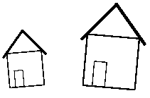

\usepackage[graphics|dvi]{ite}
Load the iTe package. Do not use `\input ite.tex' unless
your format is Plain TEX.
Example:
\usepackage{ite}
The ite package can have one of the two following options:
\usepackage{trig}
You have to load the trig package whenever you do not give
dimensional arguments to an iteblock environment, see below.
\begin{iteblock}(x_dimen,y_dimen)
...
\end{iteblock}
The iteblock environment creates a box with the specified
dimensions (optional) and serves as a container for \ite
statements.
Example:
\begin{iteblock}(\textwidth,5.0cm)
\ite Hallo
\end{iteblock}
The iteblock environment can contain any number of \ite
statements. If the optional dimensional arguments are not given, the
box will be the bounding box for all contained \ite objects.
With the optional arguments, the box is framed for convenience. The
use of nested, unrestricted iteblock environments is not
allowed, see the definition of the itebind environment.
\ite ...Defines iTe object.
Example:
\ite $cos x$
\ite \begin{minipage}Hello\\ World\end{minipage}
Whatever you can put inside an \mbox you can also put after an
\ite statement. However, only restricted iteblock
environments are allowed. iTe will expand each \ite statement
to \ITE(x y a s), where x and y is the translation in units
of \ITEunit, a is the angle of rotation, and s is the
scaling factor of the object. You should not change these numbers
manually.
\setlength{\ITEunit}{dimension}
The smallest unit an iTe object can be translated in either direction.
Example:
\setlength{\ITEunit}{0.1pt}
The default is 0.5pt or approximately 0.35mm. You should change the
value of \ITEunit only if a higher resolution is required. With
the default, the two 'X' characters in the example
\ITE(0 0 0 1)X \ITE(200 0 0 1)Xare 100pt apart. After
\setlength{\ITEunit}{1mm}, the distance would be
200mm.
\begin{itebind}
...
\end{itebind}
The itebind environment deactivates all enclosed iTe
objects. You have to use it inside macros, saved boxes, and recursive
iteblock environments.
Example:
\newsavebox{\housebox}
\sbox{\housebox}{\begin{itebind}
\begin{iteblock}(0cm,0cm)
\ITE(0 0 0 1)\framebox(20,20){}
\ITE(7 0 0 0.482)\framebox(10,20){}
\ITE(19 66 -50 1)\rule{20pt}{1pt}
\ITE(-4 35 50 1)\rule{20pt}{1pt}
\end{iteblock}
\end{itebind}}
\begin{iteblock}(3cm,3cm)
\ITE(87 95 5 1.728)\usebox{\housebox}
\ITE(230 103 -5 2.589)\usebox{\housebox}
\end{iteblock}
|
 |
Last modified by Wolfgang Kühn on
Saturday, 10 June 2000